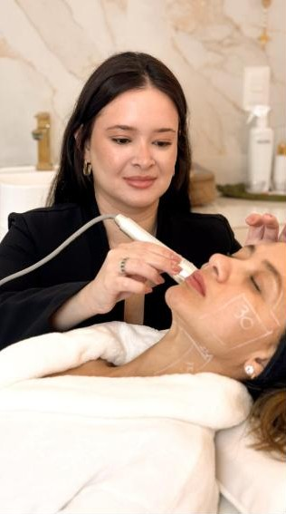
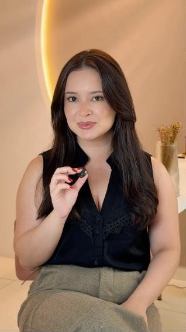
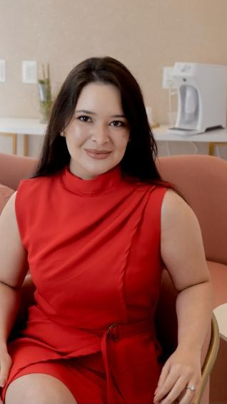

Melasma e manchas
Clareamento com estratégia, tratando a causa e respeitando a sensibilidade da pele. Controle a longo prazo, não efeito passageiro.
o carro-chefeVM Clin · Camocim, Ceará
O melasma é multifatorial. Por isso não existe fórmula pronta: existe avaliação, causa identificada e um protocolo construído pra sua pele, de dentro pra fora.
“Recebo semanalmente pacientes que já experimentaram inúmeros produtos por conta própria, sem melhora. Talvez o que falte seja uma estratégia correta.”
— Dra. Vitória Mattos
O que é o melasma
O melasma aparece como manchas acastanhadas, principalmente em testa, bochechas e buçal. Sol, calor, luz visível, hormônios, genética e até o estresse entram na conta. É por isso que ele insiste em voltar quando o tratamento ataca só a superfície.
E ele não escolhe gênero: homens também desenvolvem melasma, e o cuidado precisa ser tão individualizado quanto nas mulheres.
Role a página: o pigmento em excesso vai sendo controlado, camada por camada.
Olhar a pele de perto, entender histórico, rotina, uso de produtos e exposição ao sol.
Identificar o que está alimentando as manchas antes de escolher qualquer ativo.
Tratamentos em consultório associados a um skincare pensado só para você.
Manutenção e acompanhamento. Melasma se controla com constância, não com pressa.
Melasma no litoral do Ceará
No nosso litoral, o índice UV chega ao nível extremo em boa parte do ano, e o calor também estimula a pigmentação. Tratar melasma em Camocim exige um protocolo que considere a nossa realidade, com proteção solar e rotina que você consiga manter de verdade.
Tratamentos
Os protocolos são indicados depois da avaliação. Estas são as frentes em que eu mais atuo.
Clareamento com estratégia, tratando a causa e respeitando a sensibilidade da pele. Controle a longo prazo, não efeito passageiro.
o carro-chefeQualidade de pele em primeiro lugar: estímulo de colágeno, viço, uniformidade e firmeza. É possível rejuvenescer até sem injetáveis.
Abordagem individualizada para suavizar olheiras e uniformizar o tom do rosto.
Investigar a causa, avaliar o grau e associar tratamentos em consultório a uma rotina de skincare que funciona.
Suavizar linhas e abrir o olhar com resultado sutil, respeitando a expressão e a individualidade de cada rosto.
Renovação da pele para melhorar textura, manchas e luminosidade, com indicação certa para o seu tipo de pele.
Nem toda flacidez precisa de preenchimento. Existem formas diferentes de tratar, e muitas vezes o melhor resultado vem da associação certa.
Cada vez mais homens entendem que a pele também comunica. Tratamentos discretos, com resultado natural.

Quem cuida da sua pele
Fisioterapeuta dermatofuncional · Crefito 290079-F · VM Clin
Meu foco é o melasma, mas meu olhar é para a pele inteira. Acredito em rejuvenescimento com estratégia, precisão e naturalidade: um resultado que melhora a pele sem apagar quem você é.
Na VM Clin, cada protocolo começa com escuta e avaliação. Nada de receita pronta. O que funciona para uma paciente pode não servir para outra, e é exatamente aí que mora o cuidado.


Dúvidas frequentes
O melasma é uma condição crônica e multifatorial. O objetivo do tratamento é clarear as manchas e manter o controle a longo prazo, com protocolo e acompanhamento certos.
Porque cada melasma tem causas diferentes, e produtos usados por conta própria podem até sensibilizar a pele. Sem avaliação, é tentativa e erro.
Sim. O melasma não escolhe gênero, e o tratamento precisa ser tão individualizado quanto nas mulheres.
Em muitos casos, sim. Quando a técnica é bem indicada, é possível melhorar qualidade, firmeza e luminosidade da pele sem preenchimento ou bioestimulador.
Na VM Clin, em Camocim, Ceará. Pelo WhatsApp você recebe o endereço e escolhe o melhor horário.
Agende sua avaliação
Me conte o que mais te incomoda. A mensagem já sai pronta no WhatsApp.